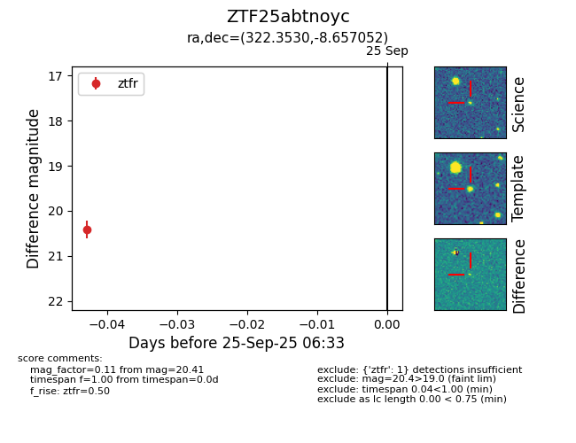

FINK: ZTF25abtnoyc
Lasair: ZTF25abtnoyc
ALeRCE: ZTF25abtnoyc
ZTF25abtnoyc (ztf,fink)
equatorial (ra, dec) = (322.3530,-8.65705)
galactic (l, b) = (44.2531,-38.91823)

last ztfr=20.41
1 ztfr detections